Pour la maisonHomeliftBudget : sur simulation
L'ascenseur de maison discret, sans charpente.
- De 2 à 5 niveaux
- Intérieur ou extérieur
- Peu de travaux
- Finitions au choix
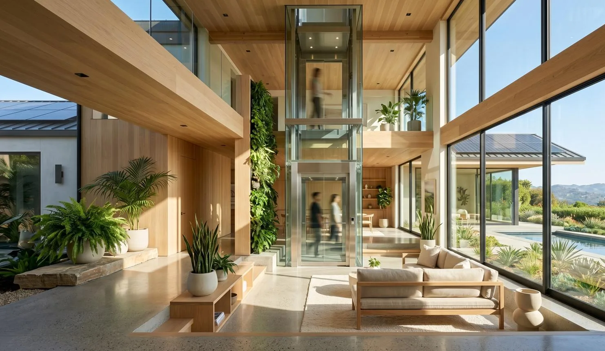
Votre
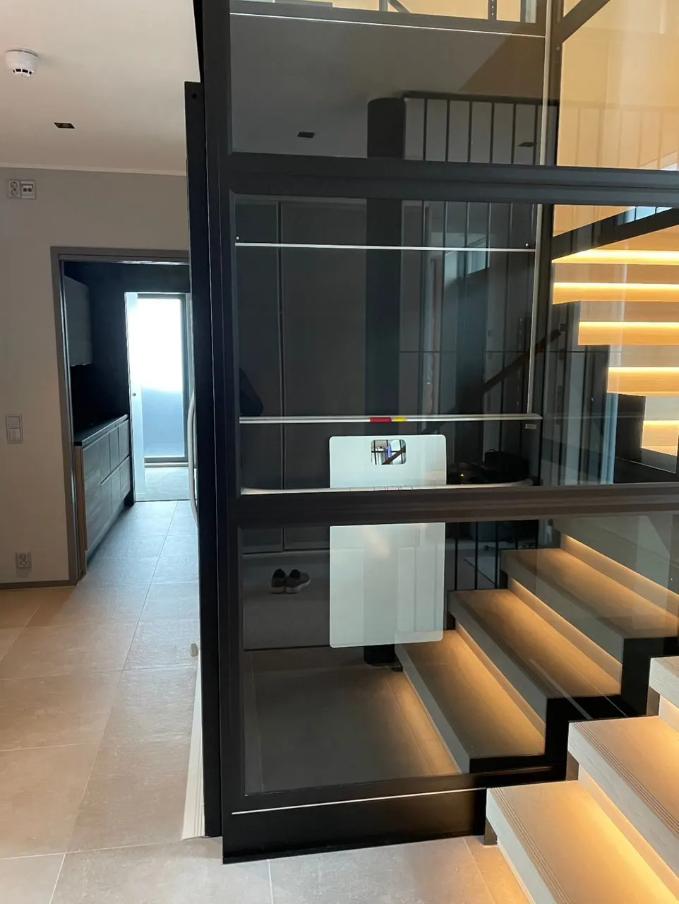
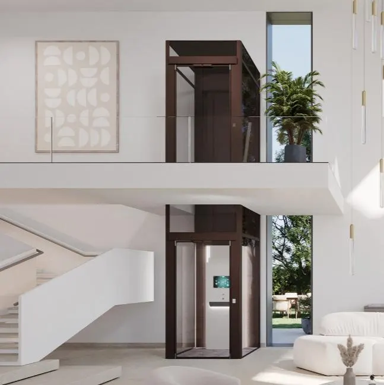
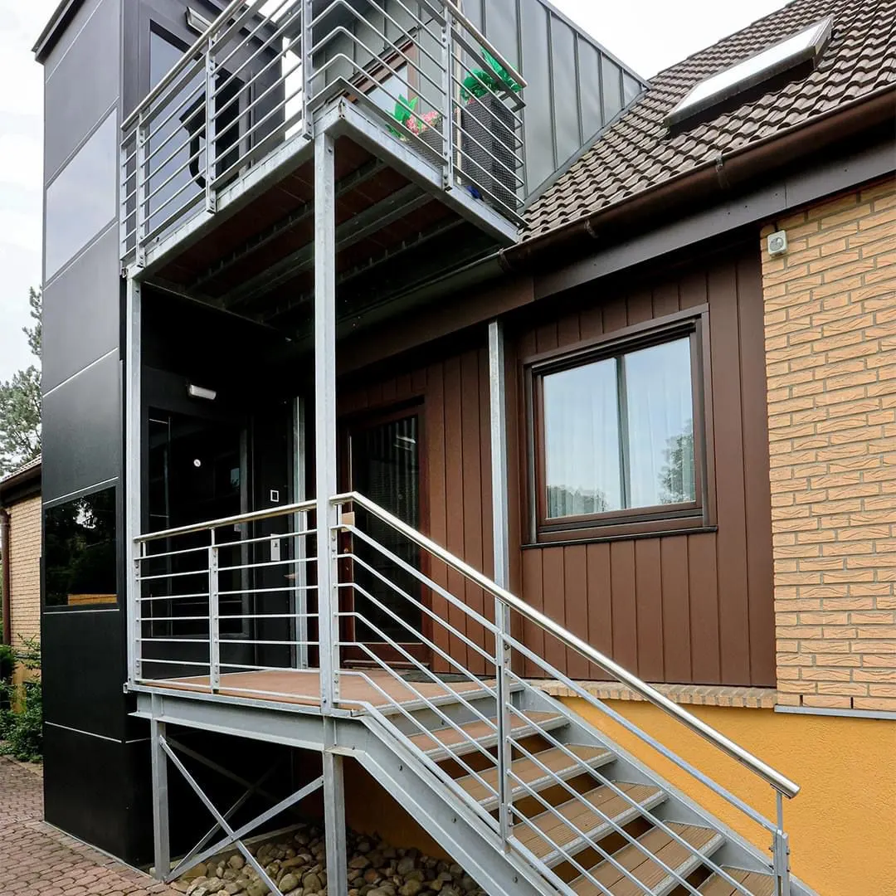
Un ascenseur chez soi ? C'est désormais possible.
Vous pensez qu'un ascenseur nécessite forcément une grande maison, des travaux importants ou une construction neuve ? Détrompez-vous.
Grâce à nos nouvelles générations d'ascenseurs privatifs, il existe aujourd'hui des solutions conçues pour s'intégrer dans différents types d'habitations.
Maison existante, villa contemporaine ou projet en construction : nous étudions votre configuration pour trouver la solution qui vous correspond.
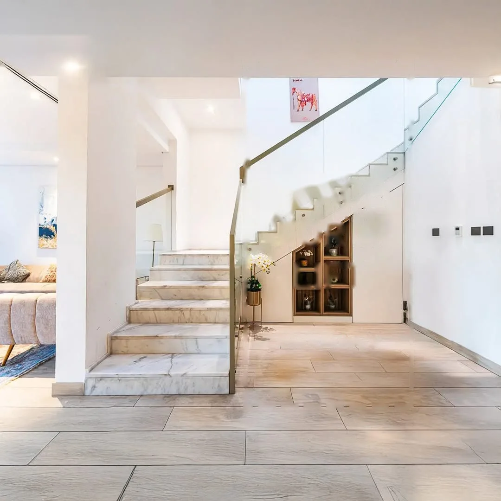
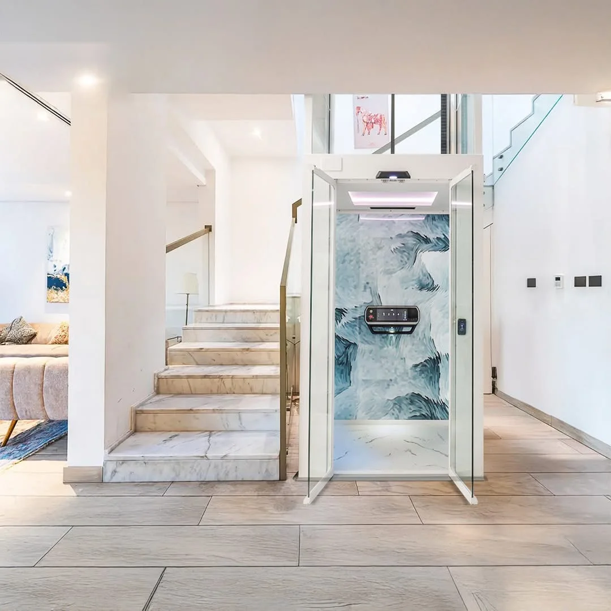
Faites glisser le trait : l'espace libre au pied de l'escalier devient un ascenseur de maison.
Imaginer le mienLes étapes de votre projet
Votre projet prend forme en moins de
Après votre simulation et votre demande, obtenez une première vision de votre solution, de votre budget et des délais envisagés.
Lancer ma simulation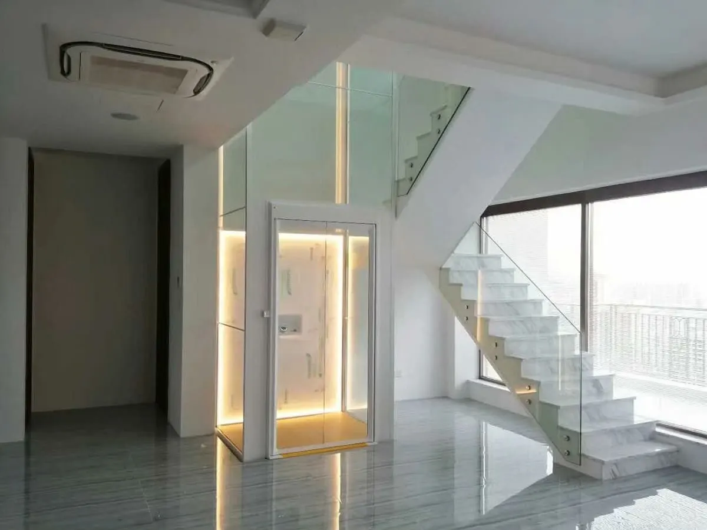
S'accorde à votre style de vie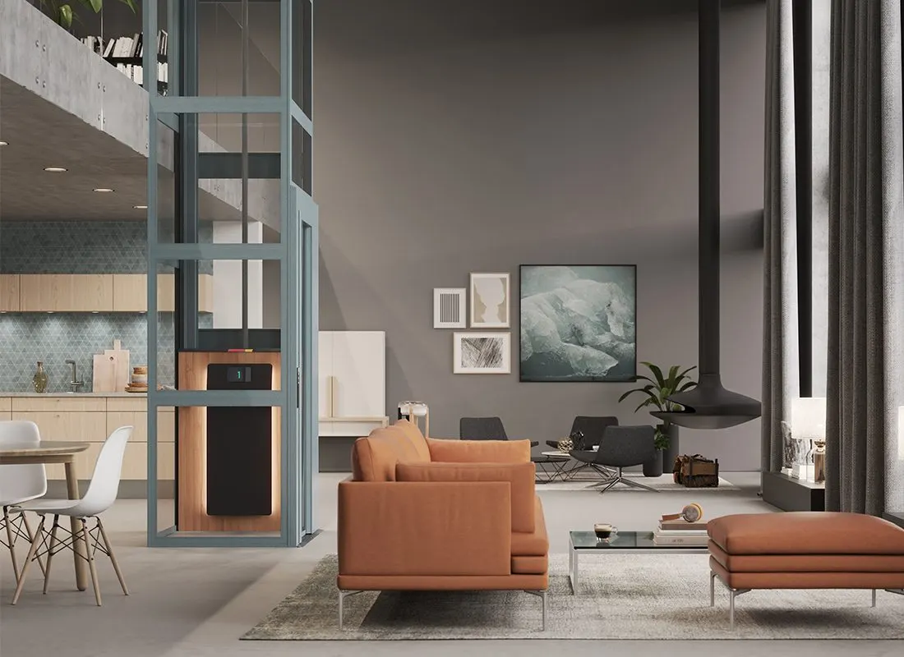
Un seul interlocuteur à chaque étape : vous savez toujours où en est votre projet.
Faites glisser pour voir les étapes →
Chaque maison est différente. Chaque projet mérite une solution adaptée. Découvrez nos modèles, explorez les possibilités et configurez votre futur ascenseur grâce à notre simulateur.
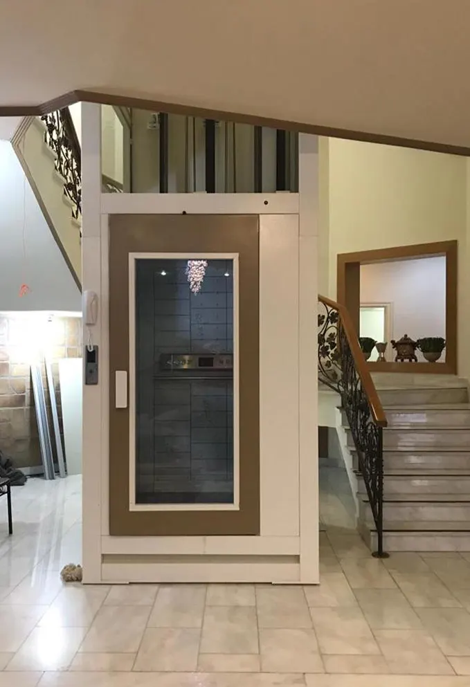
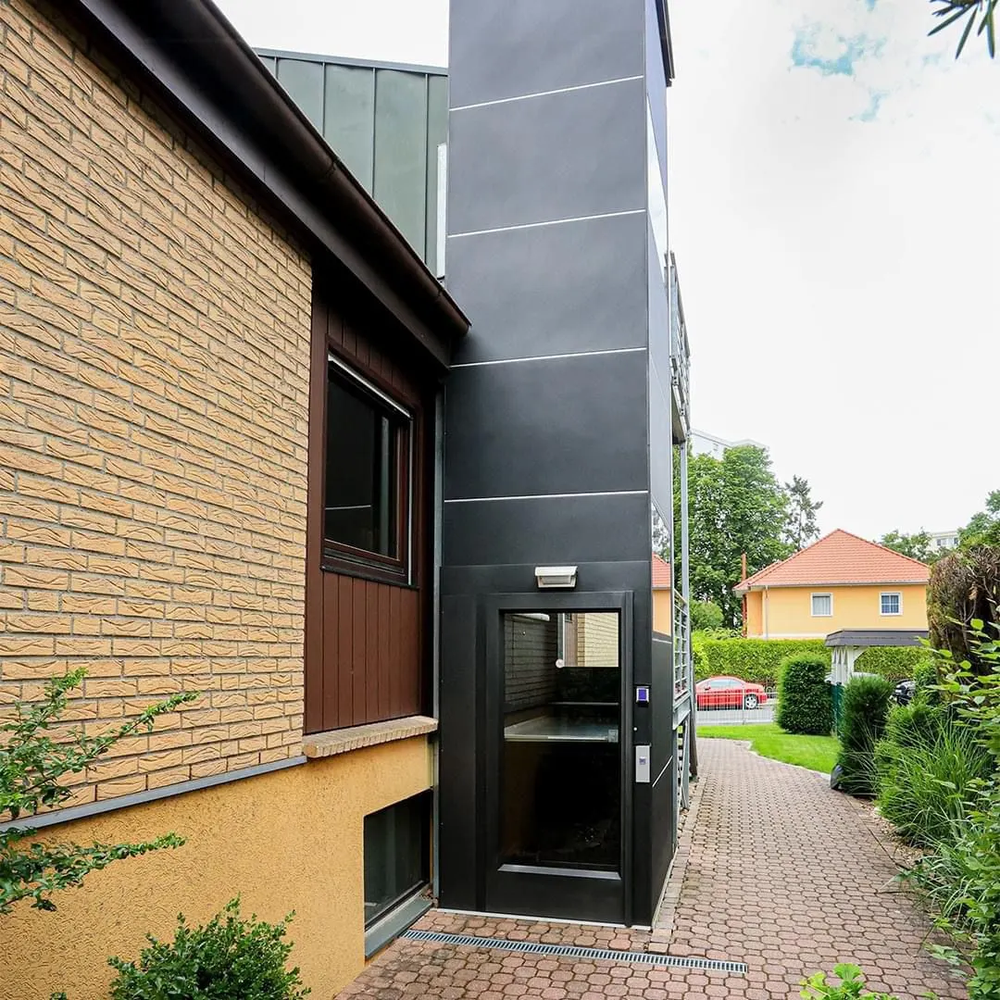
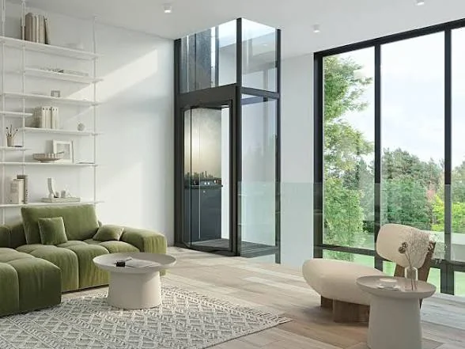

L'ascenseur de maison discret, sans charpente.
Charpente acier et verre comprise : aucune gaine à construire.
Résidentiel et commercial, moteurs italiens.
Robuste et sûr pour les marchandises lourdes.
Choisissez votre solution, voyez-la prendre forme, puis recevez un budget approximatif ajusté ensuite par nos experts.
6 projets sur 10 se font dans une maison déjà habitée. Trois solutions :
Dans l'escalier existant. Le plus simple, peu de travaux.
Contre la maison. L'intérieur reste intact.
Quand il n'y a pas d'autre place. Structure renforcée, intérieur protégé.
Des familles équipées en Algérie (Alger, Boumerdès, Tlemcen, Constantine, Annaba, Tizi Ouzou…), aux Émirats arabes unis et en Asie.
Un ascenseur d'immeuble installé dans une villa impose une fosse, une salle des machines et de gros travaux. Le Home Lift est conçu pour la maison.
| Critère | Home Lift | Ascenseur standard |
|---|---|---|
| Fosse | Pas de fosse profonde : 0,10 à 0,15 m seulement | Fosse profonde de 1,2 m |
| Salle des machines | Aucune, la machinerie est intégrée au pied de la gaine | Salle des machines sur le toit, le plus souvent |
| Hauteur du dernier niveau | 2,5 m seulement | Entre 4 et 4,2 m |
| Espace au sol | Réalisable dans un espace réduit, dès 1 × 1 m | Gaine plus grande, minimum 1,6 × 1,6 m |
| Entretien | Faible : 3 à 4 visites par an | 8 à 10 visites par an |
| Esthétique | Structure panoramique vitrée, finitions sur mesure | Gaine fermée en béton |
Un ascenseur de maison est un investissement durable. Nous répondons à la question que tout le monde se pose : et en cas de panne ?
Home Lifts conformes à la norme EN 81-41, ascenseurs standard à la norme EN 81-20. Double parachute : sur le vérin et sous la cabine.
En cas de coupure de courant, la cabine descend au niveau le plus bas et la porte se déverrouille. Une descente manuelle reste possible : personne ne reste bloqué.
Choisissez la durée qui vous convient : 2, 3, 5 ou 10 ans de garantie.
Pièces disponibles localement pour un dépannage rapide. Entretien réduit : 3 à 4 visites par an pour un Home Lift, contre une visite au moins tous les 45 jours pour un ascenseur standard.
Alger, Oran, Constantine, Annaba, Blida, Sétif, Béjaïa, Tizi Ouzou, Tlemcen, Batna, Biskra, Ghardaïa, Ouargla, Tamanrasset… Même une villa isolée dans le désert : nous venons l'installer. Et à l'international : France, Émirats arabes unis, Asie.
Cabine, vitrage, plafond, sol, portes, boutons et couleurs : parcourez les finitions de notre catalogue.
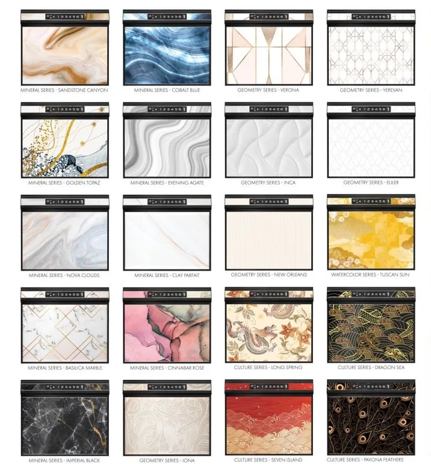
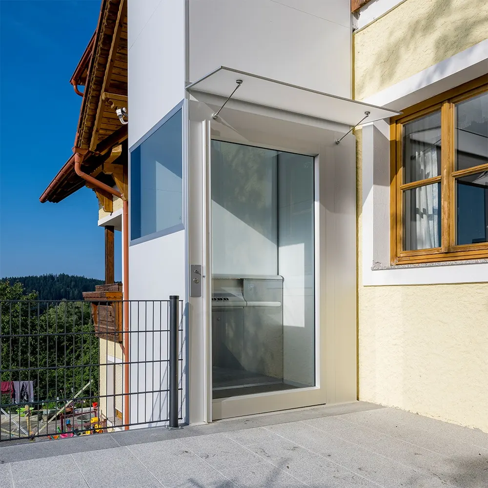
Un projet se dessine 18 à 24 mois avant la livraison : c'est dès les plans de gros œuvre que l'ascenseur doit être prévu. Nous vous accompagnons dès la conception, avec des remises progressives selon le volume annuel de projets validés.
Une autre question ? Notre service commercial vous répond.
Pas de fosse profonde pour un Home Lift : une réservation de 0,10 à 0,15 m dans le sol suffit, contre environ 1,2 m pour un ascenseur standard. Guide de conception →
Un Home Lift peut s'installer dans un espace réduit, à partir de 1 × 1 m au sol. Un ascenseur standard demande une gaine d'au moins 1,6 × 1,6 m. Quelle place prévoir pour un ascenseur de maison →
Oui, sous réserve de faisabilité technique : dans un hall, une cage d'escalier, une trémie de dalle ou à l'extérieur, en façade. La visite technique permet de le confirmer. Adapter une maison existante →
De 2 à 5 niveaux pour un Home Lift, avec ou sans charpente. Au-delà, nous proposons un ascenseur standard. Combien de niveaux pour un Home Lift →
Un entretien faible : 3 à 4 visites par an pour un Home Lift, contre une visite au moins tous les 45 jours (8 à 10 par an) pour un ascenseur standard. Nos pièces détachées sont en stock localement. Entretien d'un Home Lift →
Très peu. Le moteur hydraulique est installé au pied de la gaine, loin des chambres, et ne travaille qu'à la montée : la descente se fait par gravité. L'hydraulique en pied de gaine →
Une batterie de secours prend le relais : la cabine descend au niveau le plus bas et la porte se déverrouille pour que les personnes puissent sortir. Si la coupure se prolonge, une descente manuelle reste possible.
Uniquement du verre feuilleté de sécurité : s'il est choqué, il se fissure mais reste en place, et rien ne passe au travers. Verre feuilleté : le schéma →
Le montage sur site prend en moyenne 7 à 12 jours, une fois la fosse et l'alimentation électrique prêtes. Préparer l'installation →
Du 220 V monophasé ou du 380 V triphasé, pour 2,9 kW jusqu'à 400 kg, avec un disjoncteur dédié à l'ascenseur. Schémas électriques →
Vous choisissez une garantie de 2, 3, 5 ou 10 ans. Nos Home Lifts sont conformes à la norme EN 81-41 et nos ascenseurs standard à la norme EN 81-20.
Partout, sans limite géographique : dans toute l'Algérie, y compris le Grand Sud, en France et à l'international (Émirats arabes unis, Asie).
Le budget dépend du produit, du nombre de niveaux, de l'emplacement et de votre wilaya. Le simulateur vous donne un budget approximatif, confirmé ensuite par nos experts. Prix d'un ascenseur maison en Algérie →
Notre équipe vous répond par e-mail, en général dans la journée. Pour un budget, le simulateur reste le plus rapide.
Ou directement : +213 541 85 00 90 · WhatsApp
Trémie, fosse de 10 à 15 cm, dernier niveau à 2,5 m, gaine maçonnée ou vitrée : les points à fixer dans vos plans.
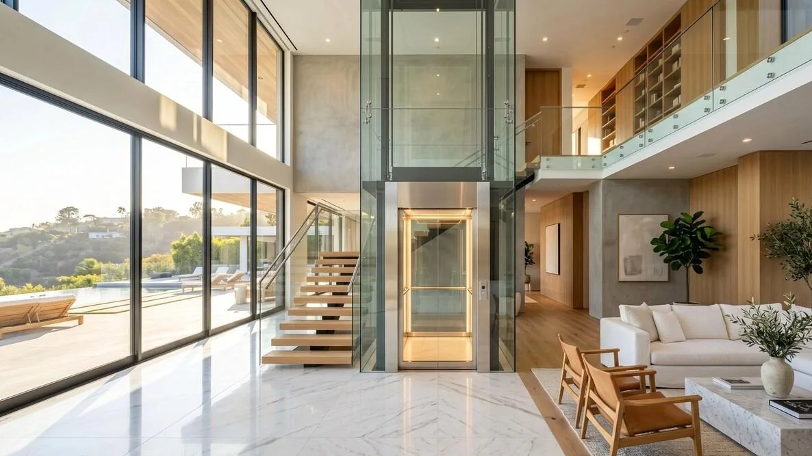
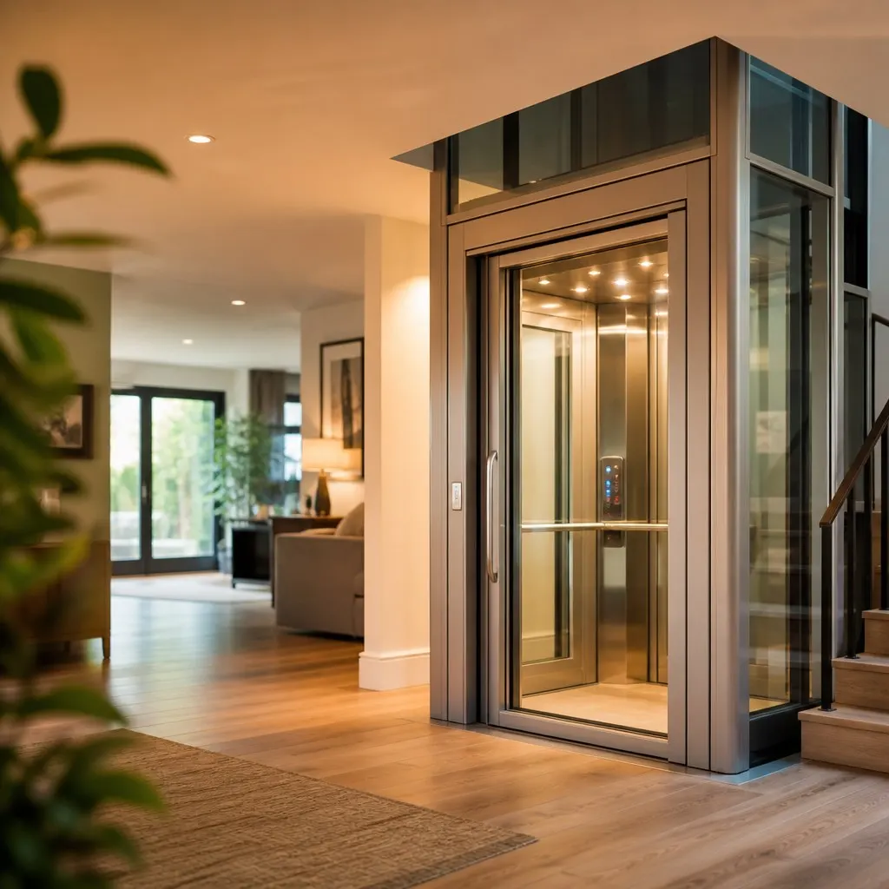
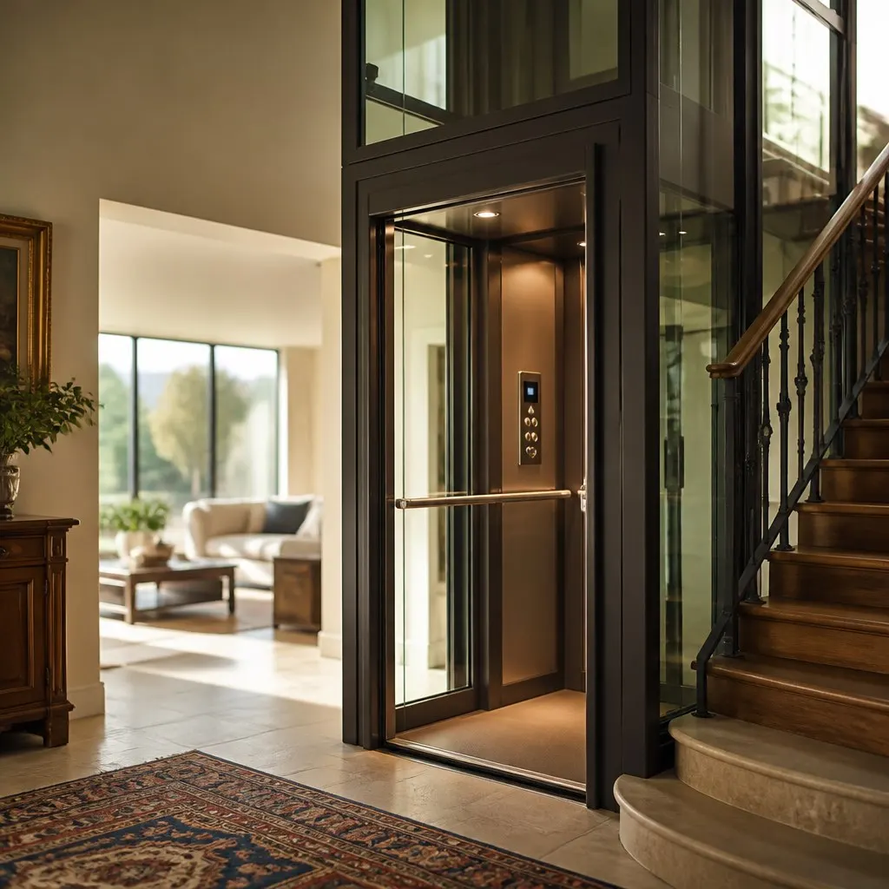
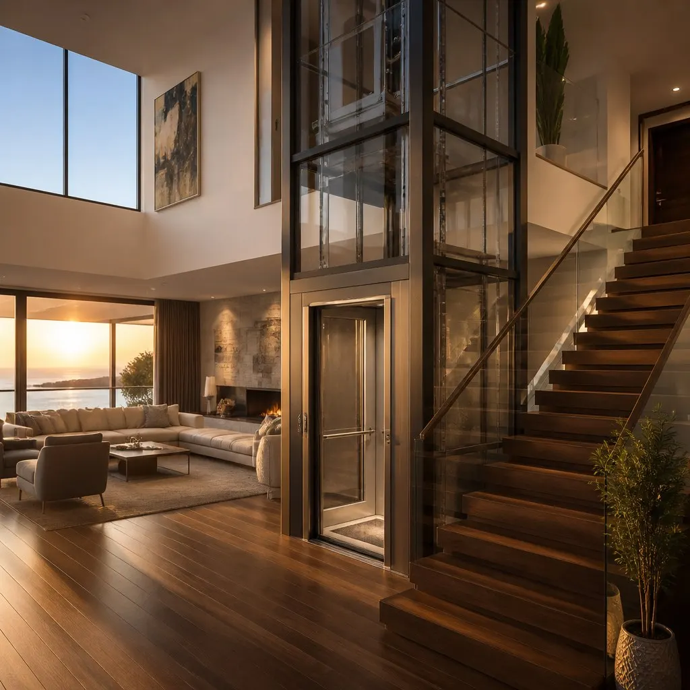
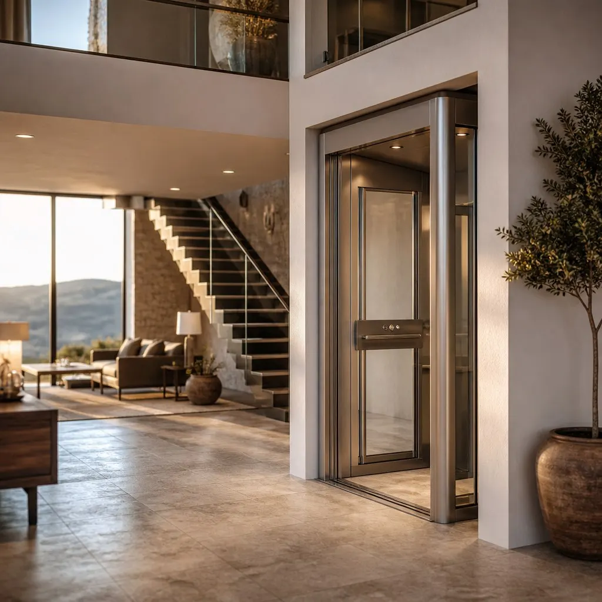
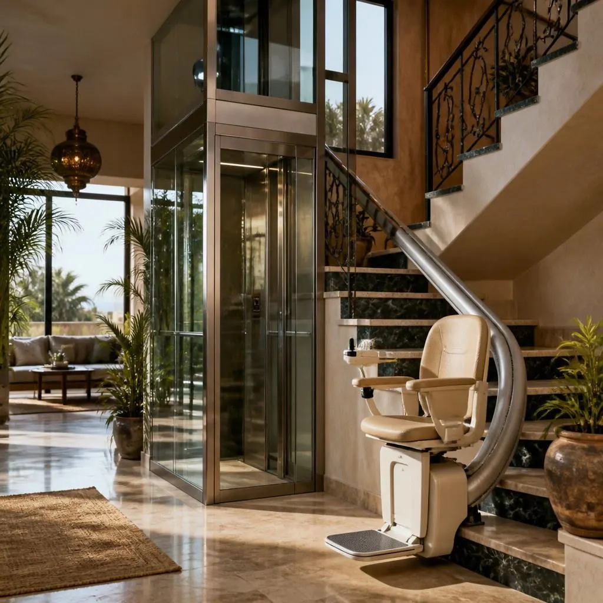
Configurez votre ascenseur en ligne ou parlez directement à notre service commercial.